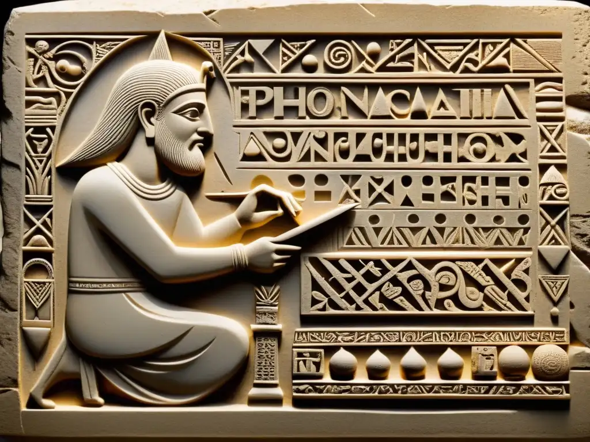
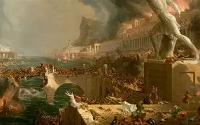
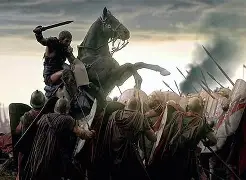

La Edad Antigua comenzó alrededor del 3500 a. C. con el origen de la escritura en Mesopotamia, cuando los sumerios inventaron la escritura cuneiforme para registrar sus actividades. Este avance marcó el paso de la Prehistoria a la Historia y permitió el desarrollo de las primeras civilizaciones organizadas, como las de Egipto, Grecia y Roma, además de culturas en India y China.

Origen de la escrituraDurante esta etapa surgieron grandes avances en la política, la ciencia, el arte y la religión. La Edad Antigua finalizó en el 476 d. C., con la caída del Imperio Romano de Occidente, dando inicio a la Edad Media.

